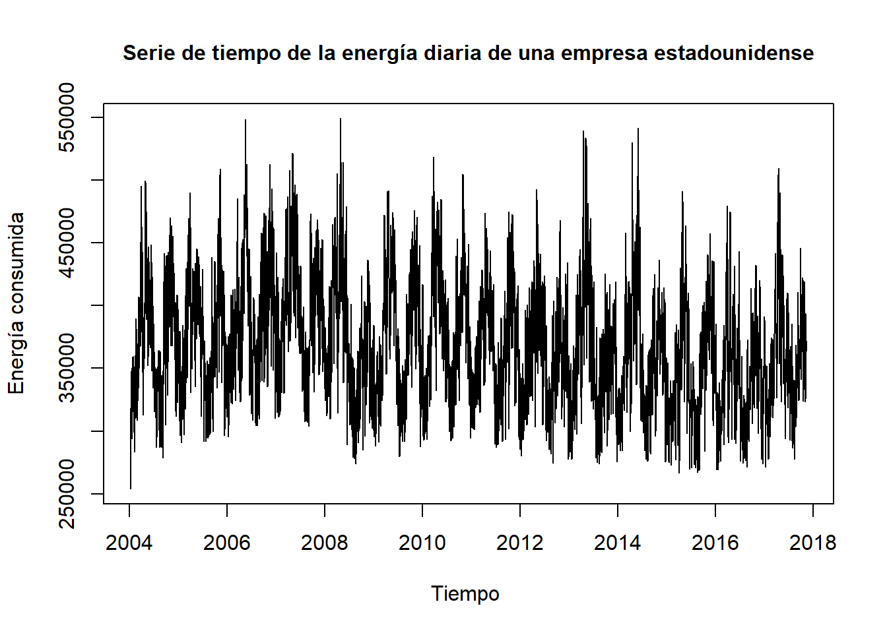

# Carga de la base de datos
dian<-read_excel("dian.xlsx", range="A7:C313", sheet = "Rec mensual a junio 2023" )
años<-2000:2023
dian<-dplyr::filter(dian,Año %in% años)
colnames(dian)<-c("Año","Mes","Impuestos")
dian$fecha<-as.Date(paste(dian$Año, dian$Mes, "1", sep = "-"), format = "%Y-%B-%d")
dian<-dian[,3:4]
# Gráfico de la serie de tiempo
dian2<-ts(dian$Impuestos,start=c(2000,01),frequency=12)
plot(dian2, main="Serie de tiempo del recaudo mensual interno",
cex.main=1.3,
xlab="Tiempo",
ylab="Recaudo interno",
cex.lab=0.4)Análisis de series de tiempo
Introducción
Sobre el trabajo
Este trabajo realiza un análisis de dos bases de datos: Recaudo de impuestos internos por la DIAN para los años 2000 a 2023 y consumo de energía por horas de la organización regional de transmisión PJM Interconnection para los años 2004 a 2018. El análisis se desarrolla de forma estadística, realizando la parte descriptiva con su correspondiente interpretación.
Análisis del recaudo de impuestos internos por la DIAN
La DIAN es la entidad encargada de administrar y recaudar los impuestos internos y aduaneros en el país. El recaudo de impuestos internos que realiza la DIAN cada mes se refiere a la suma total de los impuestos nacionales recaudados dentro del territorio colombiano durante ese período mensual. Los impuestos internos son aquellos que se aplican a las actividades económicas y transacciones que ocurren dentro del país, los cuales pueden incluir: IVA, impuesto de renta y complementarios, impuesto de timbre, impuesto de consumo, impuesto a la riqueza, impuesto predial, ICA, entre otros.
Con el proyecto se busca estudiar esta serie de tiempo para ver como es el comportamiento de los impuestos internos de Colombia a lo largo de los años, por ejemplo, encontrar patrones y observar qué tanto han aumentado dichos impuestos.
A continuación se presenta la manera en que se realiza la carga de los datos y un vistazo preliminar de la serie de tiempo en la Figura 1 .
Análisis del consumo de energía de la empresa PJM
La empresa PJM es una organización de transmisión regional que coordina el movimiento de electricidad mayorista en la totalidad, o parte, de 13 estados y el Distrito de Columbia.
El análisis del consumo de energía es esencial para mejorar la eficiencia operativa, reducir costos, cumplir con regulaciones y promover la sostenibilidad, por lo cual, este proyecto analiza la serie de tiempo con el fin de encontrar variaciones en el consumo de energía de los 13 estados y el Distrito de Columbia a lo largo del tiempo, así como también descubrir posibles patrones.
A continuación se presenta la manera en que se realiza la carga de los datos y un vistazo preliminar de la serie de tiempo en la Figura 2 .
# Carga de la base de datos
AEP_hourly<-read.csv("AEP_hourly.csv")
AEP_hourly$Datetime<-as.POSIXct(AEP_hourly$Datetime, format = "%Y-%m-%d %H:%M:%S")
AEP_hourly$fecha<-as.Date(AEP_hourly$Datetime)
energia <- AEP_hourly %>%
group_by(fecha) %>%
summarise(Energia = sum(AEP_MW))
energia<-energia[-5055,]
# Gráfico de la serie de tiempo
energia2<-ts(energia$Energia,start=c(2004,10,01),frequency=365.25)
plot(energia2, main="Serie de tiempo de la energía diaria de una empresa estadounidense",
cex.main=1,
xlab="Tiempo ",
ylab="Energía consumida",
cex.lab=0.4)